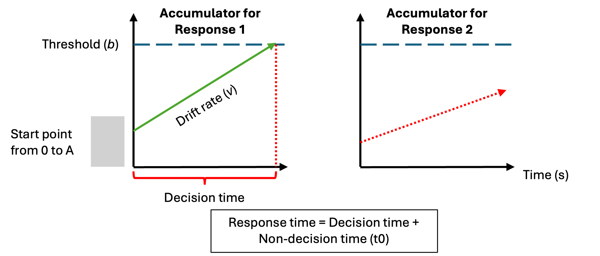
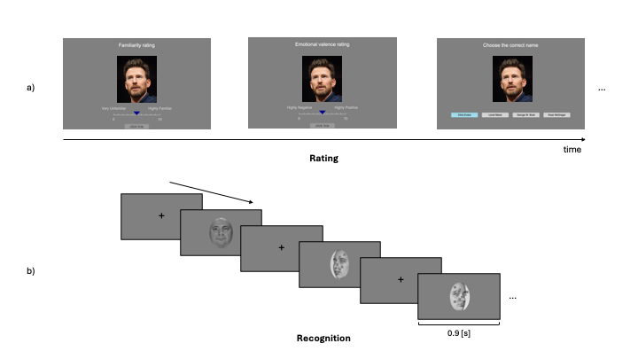
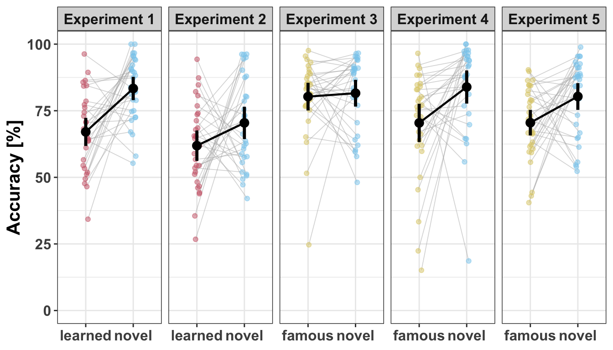
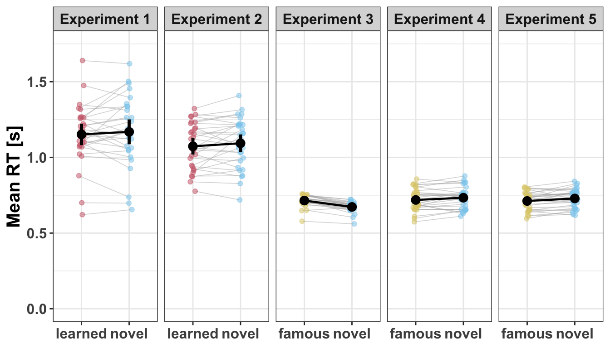
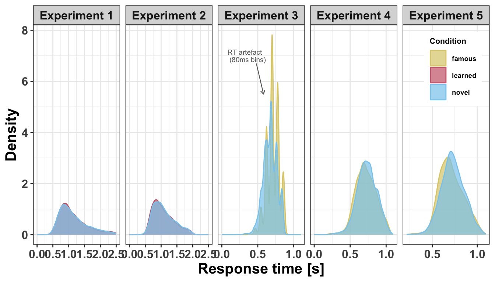
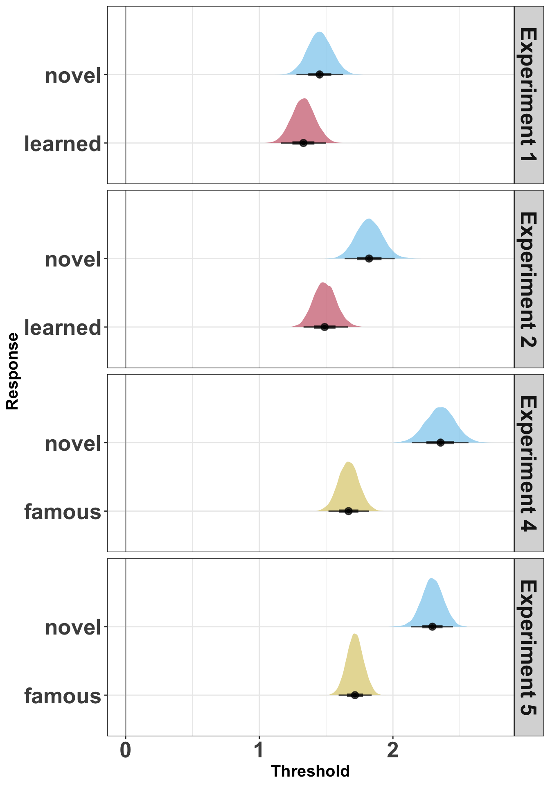
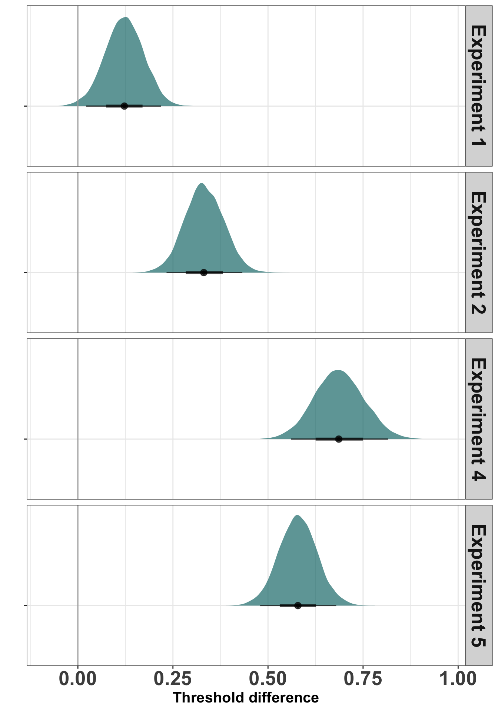
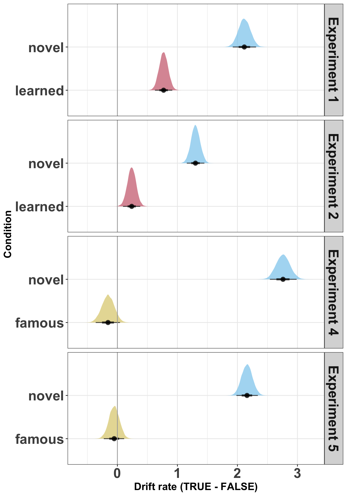
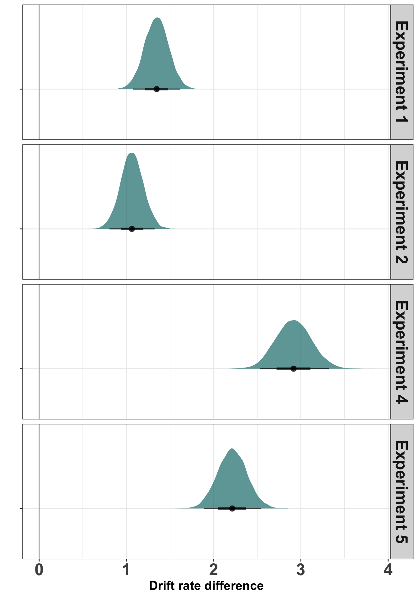

![]()
| Parameter | Label | Construct |
|---|---|---|
| Start point | A | response bias |
| Drift rate | v | signal-to-noise ratio |
| Threshold | b | response caution |
| Non-decision time | t0 | stimulus encoding and motor response |
How does familiarity impact the computational processes that support face recognition?
Abstract
Recognising a familiar face is a fundamental social cognitive ability, yet the computational mechanisms that underlie this capacity remain poorly understood. Prior research has established that familiarity affects face recognition performance, but has relied primarily on manifest measures — accuracy and response time — that cannot distinguish between qualitatively different sources of performance change. Here, we used evidence accumulation modelling across four experiments to ask not merely whether familiarity affects face recognition, but how — specifically, which latent computational processes are modulated. Experiments 1 and 2 examined visual familiarity (briefly learned faces versus novel faces) and Experiments 3 and 4 examined person knowledge (famous versus novel faces). Fitting linear ballistic accumulator models to recognition data revealed a consistent computational signature across experiments: novel faces produced substantially higher drift rates than familiar faces, accompanied by a smaller but reliable increase in response caution. The dominance of the drift rate effect localises familiarity’s primary influence to the quality of evidence accumulation — how cleanly the perceptual system extracts decision-relevant information — rather than to response bias. We interpret this as reflecting a novelty pop-out effect combined with unstable memory traces for familiar faces, alongside a conservative rejection bias in recognition memory. These findings demonstrate that computational modelling reveals dissociable mechanisms underlying face recognition that are invisible to manifest measures alone, and provide a foundation for understanding how familiarity shapes the decision processes that support social perception.
Keywords
face perception, memory, familiarity, person knowledge, decision models, evidence accumulation modelling
1 Introduction
The ability to quickly and accurately recognise a familiar face is an important aspect of everyday life, as it guides social behaviour. The way that one might interact with a family member or friend is different to a stranger. Moreover, for familiar individuals, we not only know what they look like, but we also have access to person knowledge, such as their traits, attitudes, name and professional status. To date, most prior face recognition research has used manifest (observed) measures (i.e., response times and accuracy) to assess one’s ability to recognise faces. As such, less is known about the latent computational processes that support face recognition (Phillips and White 2025). In the current project, we investigated how different types of familiarity, including visual feature familiarity and stored person knowledge, affected the latent processes that can be estimated by evidence accumulation models (EAMs; Ratcliff and Rouder (1998)). This computational approach has provided new insights on the dynamics of the decision process supporting face recognition.
The structure of mental processes that support face recognition has been a topic of investigation over the last 50 years (Johnston and Edmonds 2009; Natu and O’Toole 2011). One influential cognitive model of face recognition proposed a division between structural encoding of facial features, and more elaborate processes associated with identity recognition and person information (Bruce and Young 1986). Subsequent neuroscience research in humans and monkeys has enriched this model by relating different cognitive processes to different brain circuits Gobbini and Haxby (2006). The resulting model is a distributed neural network that incorporates two distinct systems: a core system and an extended system. The core system is dedicated to structural coding of facial features. In contrast, the extended system is involved in more elaborate processes, such as those related to person knowledge (Duchaine and Yovel 2015; Gobbini and Haxby 2007; Haxby et al. 2000; Ishai 2008; Kanwisher and Barton 2011). By mediating the retrieval of identity-specific information from memory, the extended system is able to support the recognition of faces for which prior person knowledge information has been stored (Ida Gobbini et al. 2004; Leibenluft et al. 2004).
Given the importance of knowing who it is you are interacting with, the study of familiarity has been a key aspect of the face perception research (Young and Burton 2018). Largely using manifest measures, such as reaction time and accuracy, research consistently shows that familiar faces, especially those imbued with person knowledge, facilitate a range of face recognition processes compared to previously unseen individuals or visually familiar faces (Ramon and Gobbini 2018; Young and Burton 2018). It has been argued that person knowledge involves a qualitatively different and deeper level of processing than visual familiarity (Schwartz and Yovel 2019), which facilitates the accurate discrimination of familiar from unfamiliar faces (Akan and Benjamin 2023, 2023; Schwartz and Yovel 2016; Bird et al. 2011; Klatzky and Forrest 1984; Schwaninger et al. 2002).
Although manifest (observed) measures of performance have formed the bedrock of research findings on face perception, there have been many calls in recent years to embrace more computational approaches in social and cognitive neuroscience research (Charpentier and O’Doherty 2018; Forstmann and Turner 2024; Hackel and Amodio 2018; Lockwood and Klein-Flügge 2021; Parker and Ramsey 2024; Phillips and White 2025) (Cheong et al., 2017). One benefit of adopting computational approaches is that relationships between parts of a system can be more explicitly specified (Yarkoni 2022) (Hintzman, 1991), which aids the development of theory (Muthukrishna and Henrich 2019; Oberauer and Lewandowsky 2019; Proulx and Morey 2021). A second benefit is that latent (unobserved) parameters can be estimated, which can give rise to different interpretations of the cognitive processes involved in task performance (Ratcliff et al. 2001). And at present, there is almost no understanding of the computational processes that support face recognition processes when familiarity is based on visual exposure compared to stored person knowledge (Phillips and White 2025).
Evidence accumulation models (EAM) are one approach to investigate the computational processes that are involved in speeded decision tasks (for a review, see Ratcliff et al. (2016)). While a variety of different evidence accumulation models exists, they all share a similar set of assumptions: that evidence for each response option accumulates at different rates until one response option crosses a threshold and a response is triggered (see Figure 1 for an example of the linear ballistic accumulator (LBA) model; Brown and Heathcote (2008)). These models work by translating the distribution of response times for correct and incorrect responses into estimates of latent variables assumed to underlie the decision-making process Table 1. These latent variables can then be mapped onto psychological constructs (Myers et al. 2022). For example, drift rate is the rate at which evidence in favor of a decision accumulates over time, reflecting the signal-to-noise ratio provided by the stimulus. Threshold represents the amount of accumulated evidence needed to trigger the decision, reflecting the response caution towards a specific response. The starting point is the amount of evidence towards a response before the accumulation of evidence begins, reflecting the a priori bias towards a response. Finally, the non-decision time is an estimation of the time taken to complete processes that are not involved in the decision time, such as stimulus encoding and motor responses.

This diagram represents the accumulation process one trial of a perceptual decision task for the linear ballistic accumulator (LBA). Participants are required to chose between two options (Response 1 and Response 2). In a LBA model, there is a separated accumulation of evidence (v) for each response option. In this example, the correct response is Response 1. The accumulator on the left is the accumulator for the correct response (Response 1), and the green line in represents the rate at which the evidence accumulates in favor of that response option. The accumulator on the right is the accumulator for the incorrect response (Response 2), and the dash red line represents the rate at which the evidence accumulates in favor of this response option. Once the accumulated evidence crosses the threshold (b) of a response option, the corresponding response is chosen (in this case Response 1).
In the present study, we used evidence accumulation modelling to ask new questions regarding the computational processes that support the recognition of familiar versus unfamiliar individuals. More specifically, we address how different types of familiarity (visual feature familiarity versus visual feature familiarity plus person knowledge) impact the threshold (response caution) and drift rate (signal-to-noise ratio) parameters. Based on prior work in experimental psychology (Parker and Ramsey 2024; Ratcliff et al. 2016), we chose to primarily focus on threshold and drift rate as our primary parameters of interest because we could easily and intuitively see how performance advantages could emerge based on familiarity. For instance, based on conventional use of EAMs (Myers et al. 2022), increases in signal-to-noise ratio and/or reductions in response caution could be interpreted as the task setting becoming easier.
We, therefore, hypothesised that either drift rate and/or threshold would be affected by the face familiarity manipulation. However, given the general lack of prior evidence accumulation modelling in face recognition research, we were unsure a priori of the direction of the effects. For instance, we considered it plausible that novel compared to familiar stimuli could provide a benefit in some instances, by virtue of a pop-out or novelty detector (Glanzer and Adams 1985; Kormi-Nouri et al. 2005; Schomaker and Meeter 2012; Tulving and Kroll 1995). Likewise, we also considered it plausible that familiar compared to novel stimuli could providing a benefit based on the many advantages reported for recognising personally familiar or famous individuals (Ramon and Gobbini 2018; Young and Burton 2018). Nonetheless, across a series of experiments, we used manipulations of familiarity that either only targeted the operation of core system only or the core and extended system of face perception (Table 2), so that we could further understand the computational processes that underpin different types of familiar face recognition.
| Exp | Setting | Familiarity type | Face comparision | Face system |
|---|---|---|---|---|
| 1 | laboratory | visual | visual exposure vs unknown | core |
| 2 | online | visual | visual exposure vs unknown | core |
| 3 | laboratory | visual & person knowledge | famous vs unknown | core & extended |
| 4 | online | visual & person knowledge | famous vs unknown | core & extended |
| 5 | online | visual & person knowledge | famous vs unknown | core & extended |
2 Method and Materials
2.1 Pre-registration and open science
We report how we determined our sample size, all data exclusions (if any), all manipulations, and all measures in the four experiments (Simons et al. 2017). For each experiment, the research question, hypotheses, experimental design, planned analysis, and exclusion criteria were preregistered ((Experiment 1: https://osf.io/azyvu/overview); (Experiment 2: https://osf.io/tu2eh/overview); (Experiment 3: https://osf.io/ut78f/overview); (Experiment 4 https://osf.io/vj2aq/overview) and (Experiment 5 https://osf.io/6tqxw/overview). The raw data, experimental materials, and analysis code are available on GitHub (link) or the Open Science Framework (link).
2.2 Experiment 1
2.2.1 Participants
All participants were recruited using either an online recruiting platform (https://marktplatz.uzhalumni.ch) or via a mailing list dedicated to students from the Department of Psychology of the University of Zurich. Sample size was determined in advance. Following previous suggestions from Heathcote et al. (2019), a parameter recovery study was run to estimate if 30 usable participant datasets were sufficient to accurately recover the parameter estimates. The parameter recovery study included 30 participant datasets, each with 180 trials (90 trials “familiar” and 90 trials “unfamiliar”) and with our selected model parameterisation. The arameters were sufficiently well-recovered to suggest the combination of data and design were a reasonable choice (See Supplementary Materials).
31 healthy participants completed Experiment 1 (Table 3). All participants reported normal or corrected-to-normal vision and received payment (20 CHF) for participating in the experiment. Based on our preregistration, response times longer than 2.5 seconds were removed from the analysis. However, this cutoff value led to the the removal of 59% of the trials of one participant. Given the recommendation of having a certain number of trials per condition per participant when using evidence-accumulation models (Heathcote et al. 2019; Parker and Ramsey 2024), this participant was excluded from the data analysis. In the end, the data of 30 participants (11 men and 19 women) was retained for the analysis and the LBA modeling. Ages ranged from 20 to 42 years old (\(M_{age} =\) 27.5, \(SD_{age} =\) 5.4). All experiments in this paper were approved by the ethics committee of the Federal Institute of Technology Zurich (ETHZ), and all participant gave their informed consent to participate in the study.
| Experiment | Setting | Completed | RT exclusions | Accuracy exclusions | Familiarity exclusions | Final n | Female | Male | Mean age (SD) |
|---|---|---|---|---|---|---|---|---|---|
| RT = response time; — = criterion not applicable for this experiment. | |||||||||
| Experiment 1 | Lab | 31 | 1 | 0 | — | 30 | 19 | 11 | 27.5 (5.4) |
| Experiment 2 | Online | 35 | 4 | 1 | — | 30 | 10 | 20 | 41.7 (12) |
| Experiment 3 | Lab | 40 | 0 | 1 | 9 | 30 | 17 | 13 | 26.8 (5.8) |
| Experiment 4 | Online | 46 | 1 | 3 | 12 | 30 | 13 | 17 | 39.5 (10) |
| Experiment 5 | Online | 46 | 0 | 3 | 12 | 31 | 17 | 14 | 37.4 (10.9) |
2.2.2 Stimuli
The stimuli consisted of images selected from two different data sets of face images: the Face Research Lab London Set (REF : DeBruine, Lisa; Jones, Benedict (2017): https://doi.org/10.6084/m9.figshare.5047666.v5) and the Color FERET Database (https://www.nist.gov/itl/products-and-services/color-feret-database). Each of these data sets is composed of images of different identities taken from different angle points. 102 identities were selected from the Face Research Lab London Set and 51 from the Color FERET Database. For each selected identity, three pictures of the face at three different view points (3/4 left view, frontal view and 3/4 right view) were cropped to only keep the internal features of the face. All of the images processing was realized using the free community-developed software GNU Image Manipulation Program (The GIMP Development Team (2025)). After 4 pilots experiments, we removed 27 identities (21 from the Face Research Lab London Set and 6 from the Color FERET Database) due to to the presence of identifiable features (i.e. skin marks, make-up…). In total, the data set of face images used in Experiment 1 contained 756 images: one set of three colorful face images and one set of three gray scaled face images for each of the 126 identities.
2.2.3 Material
Stimuli were presented on the screen of a MacBook Pro (Apple M2 Pro, macOS 13 Ventura). The experiment was run on Psychopy Coder (version: 2022.5, Peirce et al. (2019)) and the code used for the experimental procedure is available on OSF (https://osf.io/azyvu/overview).
2.2.4 Procedure
The experimental task was divided into two distinct parts: a familiarization part and a recognition part (Figure 2). In the familiarization part, the face of 30 unknown identities were presented on the screen and participants were told to memorize the identity of the faces. One familiarization trial consisted of the presentation of 6 face images, one after the other, depicting the same identity but varying in viewing points (3/4 left view, frontal view and 3/4 right view) and the colorimetry (colorful image, gray scale image). The duration of each image presentation was 0.75 second. Each participant underwent 30 familiarization trials. During the familiarization, we introduced catch trials to ensure participants attention. After some familiarization trials, a gray-scale image of a person’s face was presented on the screen. Participants were asked to press the “q” key if the face belonged to the last seen identity or the “p” key if it was not. The faces seen during the familiarization were considered the “Learned” faces within-subject condition.
In the recognition part, participants completed three blocks of 90 recognition trials. Each block was separated from another by a short break. Half of the trials were learned identities trials and the other half were new, previously unseen identities trials. In each trial, a gray-scale image of a face was shown on the screen. Participants were asked to choose if they had previously seen this face in the familiarization part or not. If they recognised the face, they should press the “q” key and if they did not recognise the face, then they should press the “p” key. Participants were asked to respond as quickly and accurately as possible. It is important to note that participants never saw two pictures of the same learned identity in the same block and never saw the same picture (3/4 left view, frontal view, or 3/4 right view) of a learned identity during the entire recognition part. Furthermore, each novel identity was only presented once in the entire recognition part. Response time [s] and accuracy were collected after each recognition trial.

The experimental procedure was divided into two parts: a familiarization part and a recognition part. a) In the familiarization part, participants were asked to memorize the face identity of 30 identities. For each identity, participants looked at 6 pictures depicting the same identity with different face orientation (3/4 left view, frontal view and 3/4 right view) and different colorimetry (color and gray scale images) in the order presented here: 3/4 left view, frontal view and 3/4 right view in color, followed by 3/4 right view, frontal view and 3/4 left view in gray scale. b) In each trial of the recognition part, participants had to decided if they recognize the face shown on the screen from the familiarization part. If they did, they had to press the “q” key and if the did not, the “p” key. They completed three blocks of 60 trials (half of them were from the familiarization part, half were novel faces). For the recognition part, only gray scale images of faces were used (for both learned faces and novel faces).
2.3 Experiment 2
2.3.1 Participants
All participant were recruited on the Prolific platform (https://www.prolific.com). Participants had to be located in the United Kingdom or in the United States, be aged between 18-65 years old, with normal or corrected-to-normal vision and speak fluent English. Furthermore, Prolific offers the option to chose the approval rate of the participants willing to take part in the study. The approval rate is the percentage for which participants has been approved in previous experiment. An approval rating between 95% and 100% was chosen in our study to try to ensure high data quality. 35 participants completed Experiment 2. Following our preregistered exclusion criterion, 4 participants were excluded because their percentage of missed trials was higher than 25% and 1 was removed because the overall accuracy was lower than 55%. In the end, data from 30 participants (20 men and 10 women) were retained for the analysis and the LBA modeling. Ages ranged from 25 to 61 (\(M_{age} =\) 41.7, \(SD_{age} =\) 12). Following Prolific payment principles, each participant received 9£ for the completion of the study.
2.3.2 Stimuli
In an attempt to replicate the findings of Experiment 1, the stimuli used in this experiment were exactly the same as the ones used in Experiment 1 (See Method and Materials, Experiment 1, Stimuli).
2.3.3 Material
Given the online nature of this experiment, participants were asked to complete the study using a desktop computer. The experimental procedure has been tested on three different operative systems (PC, Macintosh and Linux), as well as on three different web browsers (Google Chrome, Safari and Firefox). Participants were asked to specifically used these operating systems and web browsers to ensure a consistent procedure and participant experience.
2.3.4 Procedure
On Prolific, participants who wished to take part in the experiment read the study information and selected an URL link to the Pavlovia (Open Science Tools, Nottingham, UK) platform. After selecting the URL link, a Pavlovia webpage opened to the inform consent of the study. Participants chose if they wanted to complete this study or not after reading the inform consent. The access to the task was only granted if participants accepted the terms of the inform consent.
Regarding the experimental procedure, it was almost identical to the one used in Experiment 1 (Method and Materials, Experiment 1, Procedure). A response time window was added in the recognition part of the experiment. Instead of removing trials with a response time higher than 2.5 seconds after data collection, we decided to implement a response time window of 2 seconds for each recognition trial. In Experiment 1, 13.796% of the trials were longer than 2 seconds. We expected participants to quickly get accustomed to the response time limit and that the average percentage of missed trials will be similar or lower than in Experiment 1. Response time [s] and accuracy were collected after each recognition trial.
2.4 Experiment 3
2.4.1 Participants
All participant were recruited using either an online recruiting platform (https://marktplatz.uzhalumni.ch) or via a mailing list dedicated to students from the Department of Psychology of the University of Zurich. 40 healthy participants completed Experiment 3. We deviated from our preregistration in one way. Since this experiment was conducted to investigate how highly familiar faces affect the computational processes of face recognition, we had to remove 9 more participants who did not show a level of familiarity high enough with the presented faces in the first part of the experiment. This scenario did not occur during the pilot experiments we conducted and thus was not part of our preregistration.
Based on our preregistered criteria, a further participant was excluded from further data analysisdue to an overall recognition accuracy larger than 95%. In the end, the data of 30 participants (13 men and 17 women) were retained for further analysis and LBA modeling. Ages ranged from 20 to 42 years old (\(M_{age} =\) 26.8, \(SD_{age} =\) 5.8). All participants reported normal or corrected-to-normal vision and received payment (25 CHF) for participating in the experiment.
2.4.2 Stimuli
Two types of pictures were used for this experiment to create our within-subject stimuli conditions. Images used for the “Novel” condition were the same pictures used in Experiment 1: the data set of face images contained 378 images since only the set of three gray scaled face images for each of the 126 identities was used for this experiment. Pictures depicting celebrities (“Famous” condition) were taken from the internet. For each of the 60 preselected celebrities, 3 pictures depicting them from a similar angle to the “Novel” faces were chosen (3/4 left view, frontal view and 3/4 right vie). Moreover, 60 more pictures (one for each of the celebrities) was only used for the first part of the experiment. All of the “Famous” images processing was realized using the GNU Image Manipulation Program (The GIMP Development Team (2025)). Background was removed from the picture and replace by the same background used in the “Novel” images. The same gray scale filter used for the “Novel” faces was applied to the celebrities images used during the recognition part. In total, the data set of face images used in this experiment contained 618 images: 1 set of three gray scaled face images for each of the 126 novel identities, 1 set of three gray scaled face images for each of the 60 famous identities and 60 images of celebrities used in the first part of the experiment. Furthermore, a gray mask was added on top of each pictures (“Novel” faces and “Learned” faces) during the recognition part. Each mask was composed of 10 grey rectangles which position differs in function of the face orientation (See Figure 3 for an example of the mask in question). The addition of a grey mask on top the face images decreased the overall accuracy of the recognition part during pilot work to a percentage of correct answer suited for the application of evidence-accumulation modeling. Without this addition, the overall accuracy would be too extreme.

a) Images showing faces used in Experiment 1 and 2 for the three different face orientation (3/4 left, frontal view, 3/4 right) b) Same faces with the gray mask added on top of the images. These images were used in the recognition part of Experiment 3. Each mask is composed of 10 gray rectangles which position was adapted in function of the face orientation.These faces were used in the “novel” condition of Experiment 3.
2.4.3 Material
Stimuli were presented on the screen of a MacBook Pro (Apple M2 Pro, macOS 14 Sonoma). The experiment was run on Psychopy Coder (version: 2022.5, Peirce et al. (2019)) and the code used for the experimental procedure is available on OSF (https://osf.io/ut78f/overview).
2.4.4 Procedure
The experimental task was divided into two distinct parts: a rating part and a recognition part (Figure 4). During the rating part, participants were presented pictures of 60 celebrities. They were asked to rate these celebrities on two different features: how familiar the celebrity was to them (from 0: Highly unfamiliar to 10: Highly familiar) and how positive or negative were their feelings towards the celebrity (from 0:Highly negative to 10: Highly positive). After the two rating scales, participants were asked to choose the correct name of the same identity from four different naming options. From the 60 celebrities faces presented during the rating part, the 30 celebrities with the highest familiarity (with a minimum of 7 out of 10) and whose names were correctly assigned were for the “Famous” faces condition of the recognition part. This procedure was individualized for each participant. In the recognition part, participants completed three blocks of 90 recognition trials. Each block was separated from another by a short break. Half of the trials were famous identities trials and the other half were new, previously unseen identities trials. At each trial, a gray scale image of a face was shown on the screen. Participants were asked to choose if they recognize the face (and not the picture) seen this face in the familiarization part or not. If they did, the should press the “q” key and if they did not, the “p” key. Based on pilot work, task difficulty was increased by adding a response time window of 0.9 second during each recognition trial. Response time [s] and accuracy were collected after each trial.

The experimental procedure was divided into two parts: a rating part and a recognition part. a) In the rating part, participants were asked to rate famous faces on two distinct features using rating scales (0-10): their familiarity (low to high) and the emotional valence (negative to positive). After the two rating scales, they had to chose the correct name of the celebrities from four different naming options.(Disclaimer: the picture used here was not used in the actual rating part of the experiment. Its purpose here is to demonstrate what participants had to realize in the first part of the experiment. Image attribution: Philip Romano, CC BY-SA 4.0 https://creativecommons.org/licenses/by-sa/4.0, via Wikimedia Commons, https://commons.wikimedia.org/wiki/File:ChrisEvans2023.jpg) b) In each trial of the recognition part, participants had to decided if they recognize the face shown on the screen. If they did, they had to press the “q” key and if the did not, the “p” key. They completed three blocks of 60 trials (half of them were famous faces, half were novel faces).
{kind=link}
2.4.5 Issues with response times collection
During data analysis, we observed that the distribution of the response times for Experiment 3 looked did not look positively skewed (right skewed). After investigation of the code used to run the experiment, we noticed that there was a coding error, which resulted in this abnormal response times distribution. We decided to not run further data analysis (LBA model) for this experiment because evidence-accumulation models expect the response times distribution to be right skewed. Instead, we decided to replicate Experiment 4, in which the same face familiarity levels (novel vs famous) were manipulated.
2.5 Experiment 4 and Experiment 5
2.5.1 Participants
All participant were recruited on the Prolific platform (https://www.prolific.com) using the same criteria as Experiment 2.
For Experiment 4, 46 participants completed the experiment. Following our preregistered exclusion criterion, 12 did not show a sufficiently high level of familiarity with the famous faces. In addition, 1 participant was excluded because the percentage of missed trials was higher than 25% and 3 were removed because the overall accuracy was lower than 55% or higher than 95%. In the end, the data of 30 participants (17 men and 13 women) were retained for further analysis and LBA modeling. Ages ranged from 25 to 61 (\(M_{age} =\) 39.5, \(SD_{age} =\) 10). Following Prolific payment principles, each participant received 9£ for the completion of the study.
46 participants completed Experiment 5. 12 did not show a sufficiently high level of familiarity with the famous faces and 3 were removed because the overall accuracy was lower than 55% or higher than 95%. In the end, the data of 31 participants (14 men and 17 women) were retained for further analysis and LBA modeling. Ages ranged from 18 to 59 (\(M_{age} =\) 37.4, \(SD_{age} =\) 10.9). Following Prolific payment principles, each participant received 9£ for the completion of the study.
2.5.2 Stimuli
Initially, we planned to use the exact same stimuli as the one used in Experiment 3. However, during the pilot, it was noticed that the “Famous” faces and the “Novel” faces contained differences in low visual features such as brightness, luminosity angle and the resolution of the picture. These differences might have aided the categorization between “famous” and “novel” stimuli and affected the estimation of our parameters of interest. To avoid that decisions are based on visual features and not on familiarity, we changed the face pictures data set for both conditions in Experiment 4 and Experiment 5.
For the “Famous” condition, faces were all taken from https:://commons.wikimedia.org. For each of the famous identities (30 men, 30 women), four pictures were selected: one for the rating part of the experiment and three were used in the recognition part. The list of the attributions as well as the URL links to all the pictures can be found in the Supplementary Materials. For the “Novel” condition, face images were taken from the “10K US Adult Faces Database” (Bainbridge et al. 2013). These pictures depict faces in a natural environment, similar to the selected images of the celebrities. 103 faces were selected from this database and used in the recognition part of the experiment.
To avoid recognition based on low visual features, we decided to not standardize the brightness and luminosity angle of the entire picture dataset. The rationale behind this decision was to avoid adding modifications to the original image that might facilitate the categorization between the stimuli conditions. The only low level visual feature that we standardized across all the images was the resolution. After cropping, every images was down sampled to a 250 pixels (px) height, a height similar to the original height of the images from “10K US Adult Faces Database”, and grayscaled.
2.5.3 Material
As Experiment 2, since this was an online data collection protocol, participants were asked to complete the study using a desktop computer.
2.5.4 Procedure
The online procedure was the same as the one described for Experiment 2: on Prolific, participants who wished to take part in the experiment read the study information and selected an URL link to the Pavlovia platform. After selecting the URL link, a Pavlovia webpage opened to the inform consent of the study. Participants chose if they wanted to complete this study or not after reading the inform consent. The access to the task was only granted if participants accepted the terms of the inform consent.
The experimental procedure was similar to the one used for Experiment 3 (see Method and Materials, Experiment 3, Procedure): participants first underwent a rating part which preceded the recognition part. The only modification added to the recognition part was the increase of the response time window from 0.9s to 1.1s.
2.6 Evidence accumulation modeling
2.6.1 Model specification
A hierarchical LBA model was fit to the data with model specifications outlined in our preregistrations (Table 4). LBA models have one accumulator for each response option, with potentially different parameter values. In our design, that meant that for Experiment 1 and 2, there was one accumulator for the “Learned” response and another for the “Novel” response. For Experiment 3 and 4, there was one accumulator for the “Famous” response and another for the “Novel” response. More specifically, for Experiment 1 and 2, threshold was allowed to vary by participants’ response (Learned/Novel) whereas mean drift rate was allowed to vary by the stimulus condition (Learned/Novel) and the match between the accumulator and the stimulus (TRUE/FALSE). If the stimulus was “Learned”, then the accumulator for the “Learned” response would be TRUE, whereas the accumulator for the “Novel” response would be FALSE. The difference between the TRUE and FALSE accumulator represents the quality of the information processing about a decision (Lewandowsky and Oberauer 2018). A greater difference between these accumulators means a greater quality of evidence accumulating towards that decision.
For every model, threshold was allowed to vary by response (Novel/Learned for Experiment 1 and 2, Novel/Famous for Experiment 3 and 4). The standard deviation for the true accumulator was allowed to vary by the match factor whereas the the standard deviation for the false accumulator was kept uniform to make the model identifiable (Donkin et al. 2009). A single value for the start point (A) and non-decision time (t0) was estimated for our preregistered models but model estimations where these parameters were allowed to vary are described in supplementary materials.
| Parameter | Label | Condition | Response | Accuracy | Fixed |
|---|---|---|---|---|---|
| Condition = training condition (Learned vs. Novel or Famous vs. Novel); Response = key-press response (same vs. different); Accuracy = (true/correct vs false/incorrect); SD = standard deviation. | |||||
| Start point | A | - | - | - | 1 |
| Mean drift rate | v | yes | no | yes | - |
| SD drift rate | sd_v | no | no | yes | - |
| SD false drift rate | false.sd_v | - | - | - | 1 |
| Threshold | b | yes | yes | no | - |
| Non-decision time | t0 | yes | no | no | - |
| SD Non-decision time | st_0 | - | - | - | 0 |
2.6.2 Model estimation
We carried out a Bayesian model estimation using the EMC2 R package. Details about the priors of each model are provided in supplementary materials and the code required to run the analyses is available on OSF. Priors were chosen to be weakly-informative meaning that they have little influence on the estimation. The parameter were estimated through two sampling steps. First, a separate estimation of the fixed effects for each participants was conducted. These estimations were used as the starting point for the full hierarchical model.
Priors here. Model checking here. Refer to plots in Supps.
2.6.3 Data analysis
For every experiment, the separate analysis of response times and accuracy was conducted using Bayesian Multilevel Models with R Package brms (Bürkner 2017). The evidence-accumulation modelling analyses of the distributions of response times for the correct and wrong answers were realized using the EMC2 R package (Stevenson et al. 2025). In order to make inference about the magnitude of familiarity effects, differences in parameter estimates across conditions were compared. To summarize the distribution of parameters of interest, we report the median of the posterior distribution together with 95% quantile interval of the posterior distribution in square brackets in the following section.
We can elaborate here on inferential criteria… RR can do this.
3 Results
First, we show raw data plots and descriptive statistics when reaction time and accuracy are analyses separately. Second, results from the LBA modeling will be presented.
3.1 Raw data plots and descriptive statistics



3.2 Evidence accumulation modeling results
For all experiments, posterior distributions for drift rate and threshold parameters are visualised in Figure 7 and Figure 8 and the medians and 95% quantile intervals are summarised in Table 5.
3.2.1 Experiment 1
Threshold: We estimated the threshold parameter for both response options (Novel and Learned). Inspection of the posterior distributions of the effect of face familiarity on the threshold parameter shows that while the threshold for Novel faces is greater that the one for Learned faces.


Drift rate: To quantify the contribution of face familiarity on the drift rate, we computed the difference between the TRUE and FALSE drift rate for each familiarity condition as our main dependent measure. To estimate the familiarity effect, we then subtracted the drift rate difference on learned trials from novel trials. Inspection of the posterior distribution shows that there is a novelty effect in drift rate difference in Experiment 1. The quality of the evidence accumulation was greater for Novel faces compared to Learned faces.


| Parameter | Condition | Median | 95% QI |
|---|---|---|---|
| QI = quantile interval. | |||
| Experiment 1 | Experiment 1 | Experiment 1 | Experiment 1 |
| Threshold | novel | 1.45 | [1.278, 1.628] |
| Threshold | learned | 1.33 | [1.163, 1.5] |
| Threshold contrast | novel - learned | 0.12 | [0.022, 0.219] |
| Drift rate | novel | 2.11 | [1.922, 2.31] |
| Drift rate | learned | 0.77 | [0.626, 0.914] |
| Drift rate contrast | novel - learned | 1.35 | [1.074, 1.618] |
| Experiment 2 | Experiment 2 | Experiment 2 | Experiment 2 |
| Threshold | novel | 1.82 | [1.639, 2.013] |
| Threshold | learned | 1.49 | [1.331, 1.664] |
| Threshold contrast | novel - learned | 0.33 | [0.233, 0.433] |
| Drift rate | novel | 1.3 | [1.156, 1.449] |
| Drift rate | learned | 0.24 | [0.094, 0.381] |
| Drift rate contrast | novel - learned | 1.06 | [0.806, 1.323] |
| Experiment 4 | Experiment 4 | Experiment 4 | Experiment 4 |
| Threshold | novel | 2.36 | [2.144, 2.565] |
| Threshold | famous | 1.67 | [1.518, 1.82] |
| Threshold contrast | novel - famous | 0.69 | [0.561, 0.816] |
| Drift rate | novel | 2.76 | [2.541, 2.986] |
| Drift rate | famous | -0.16 | [-0.361, 0.044] |
| Drift rate contrast | novel - famous | 2.92 | [2.53, 3.32] |
| Experiment 5 | Experiment 5 | Experiment 5 | Experiment 5 |
| Threshold | novel | 2.29 | [2.135, 2.45] |
| Threshold | famous | 1.72 | [1.594, 1.841] |
| Threshold contrast | novel - famous | 0.58 | [0.479, 0.679] |
| Drift rate | novel | 2.16 | [1.983, 2.34] |
| Drift rate | famous | -0.05 | [-0.227, 0.113] |
| Drift rate contrast | novel - famous | 2.21 | [1.888, 2.546] |
3.2.2 Experiment 2
Threshold: Inspection of the posterior distribution shows that there is an effect of familiarity on the threshold parameter.
Drift rate: Inspection of the posterior distribution shows that there is a similar familiarity effect in drift rate difference as in Experiment 1. The quality of the evidence accumulation was greater for Novel faces compared to Learned faces.
3.2.3 Experiment 3
As explained in the Methods, due to a timing artefact in data collection (responses recorded in discrete 80ms bins), the RT distributions from Experiment 3 do not meet the continuity assumptions of the LBA and we do not report model parameter estimates for this experiment.
3.2.4 Experiment 4
Threshold: Inspection of the posterior distribution shows that there is an effect of familiarity on the threshold parameter. Threshold was greater for Novel faces than for Famous faces.
Drift rate: Inspection of the posterior distribution shows that there is a familiarity effect in drift rate difference, which mirrors the results from Experiment 1 and Experiment 2. The quality of the evidence accumulation was greater for Novel faces compared to Famous faces.
3.2.5 Experiment 5
Threshold: Inspection of the posterior distribution shows that there is an effect of familiarity on the threshold parameter which mirrors the results from Experiment 4.
Drift rate: Inspection of the posterior distribution shows that there is a familiarity effect in drift rate difference, which mirrors the results from Experiment 1, Experiment 2 and Experiment 4. The quality of the evidence accumulation was greater for Novel faces compared to Famous faces.
4 General discussion
We set out to understand not merely that familiarity affects face recognition, but how — specifically, which latent computational processes are modulated when a face is familiar versus novel. By fitting linear ballistic accumulator models to recognition data across a series of experiments, we show that familiarity primarily affects the quality of evidence accumulation, with a secondary and smaller effect on response caution. This computational signature — a novelty advantage in drift rate, accompanied by a modest novelty advantage in threshold — replicates across visual familiarity (Experiments 1 and 2) and, tentatively, visual familiarity and person knowledge (Experiment 4). These findings move beyond manifest measures of accuracy and response time to characterise the decision-level mechanisms that underpin familiar face recognition (Phillips and White 2025).
4.1 The impact of visual familiarity
The most theoretically important finding is the combination of drift rate and threshold effects. Across Experiments 1 and 2, the novelty advantage in drift rate was substantially larger than the novelty advantage in threshold. This dissociation matters because the two parameters reflect qualitatively different aspects of the decision process. Drift rate indexes the quality of evidence accumulation — how cleanly and rapidly perceptual and cognitive systems extract decision-relevant information from a face. Threshold indexes how much accumulated evidence is required before a decision is triggered. The dominance of the drift rate effect localises familiarity’s influence to the quality of signal from the image more so than as a function of response bias between novel and familiar key presses.
Set within the Bruce and Young framework of face perception (Bruce and Young 1986), visual familiarity modulates the quality of structural encoding and feature matching within the core face processing system (Bruce and Young 1986; Gobbini and Haxby 2006), thus generating a stronger perceptual signal that feeds into the decision process. Novel faces, by this account, provide a cleaner and less ambiguous perceptual signal than visually familiar faces — consistent with “pop-out” and attentional capture accounts (Johnston et al. 1990; Lev-Ari et al. 2022; Lubow and Kaplan 1997). In contrast, visually familiar faces may generate noisier representations due to interference from accumulated but imperfectly consolidated memory traces (Rapcsak 2019).
The smaller but reliable threshold effect reflects a qualitatively different influence on performance. In a yes/no recognition task, participants must set separate response criteria for the “familiar” and “novel” responses, and the higher threshold for the novel response is consistent with a well-documented conservative rejection bias in recognition memory [ CITE glanzerMirrorEffectRecognition1985; stretchWixtedWhyPositive1998]: participants are more willing to endorse familiarity than to endorse novelty, requiring more evidence before committing to a rejection. Because the drift rate advantage is substantially larger, the net behavioural outcome remains a novel face advantage in speed and accuracy — the signal quality benefit outweighs the response caution cost.
4.2 The impact of person knowledge
Extending these findings to person knowledge is theoretically important because famous faces engage not only the core face processing system but also the extended system, which mediates retrieval of identity-specific person knowledge (Gobbini and Haxby 2007; Duchaine and Yovel 2015). However, our conclusions here must remain tentative since we only have evidence from a single experiment (Experiment 4) due to technical issues in data collection during Experiment 3. Experiment 4 showed a pattern broadly consistent with Experiments 1 and 2: novel faces produced higher drift rates and slightly higher response caution than famous faces. This raises the possibility that the computational signature of novelty generalises beyond visual familiarity to person knowledge contexts. Moreover, the effects were larger for drift rate and threshold compared to Experiments 1 and 2, which might suggest that the more stable memory traces for famous people based on the added person knowledge could exaggerate the novelty or “pop-out” effect.
At this stage, however, we remain cautious in our conclusion here and suggest that person knowledge effects on drift rate and threshold remain a largely open empirical question, which requires careful further investigation using improved and/or different stimuli, such as personally familiar people (e.g., family, friends or partners). More generally, our findings underscore that although the study of true familiarity - where person knowledge is available - is more akin to our real-world experiences of interacting with familiar people, it is inherently more difficult to study with tight experimental control (REF Burton, 2024 Encyclopedia chapter).
4.3 Limitations
A novelty advantage in drift rate is in conceptual agreement with studies that reported a better recognition ability for novel faces than for visually familiar faces (Bindemann et al. 2014; Read and Hammersley 1990), whist being in apparent tension with prior work reporting better recognition performance for famous or personally familiar faces (Hancock et al. 2000; Jenkins and Burton 2011; Klatzky and Forrest 1984). We suggest two factors may contribute to this discrepancy. First, prior studies used manifest measures that conflate signal quality with response bias, which makes interpretation more difficult (Wagenmakers et al. 2007). Second, the yes/no recognition task used here creates an inherent asymmetry: a correct novel response requires only the absence of a recognition signal, whereas a correct famous response requires the presence of one. Novel faces may therefore benefit from a processing advantage that is specific to this task structure, and which would not generalise to tasks requiring positive identification of unfamiliar faces. Whether the novelty advantage in drift rate reflects a genuine signal quality effect, a task asymmetry, or both, remains an open question that future work should address by comparing LBA parameters across paradigms that vary the demands placed on novel versus familiar face processing.
Previous evidence accumulation model development studies have emphasised how the number of trials per cell of the design can influence model fitting and parameter estimation (Alexandrowicz and Gula 2020; Lerche et al. 2017; Wagenmakers et al. 2007). Our design (90 trials per condition) and control of error rates followed the minimum recommendations to apply EAM (Lüken et al. 2025), as well as a parameter recovery study that showed 90 trials per condition was sufficient to recover simulated parameters. Practical considerations were also incorporated, including the challenge of finding face stimuli with standardized low-level visual features that includes a large number of identities. Nonetheless, adding more trials per condition (e.g., 200 per condition; REF Boag et al 2025) would have increased the robustness of our parameter estimates.
4.4 Future directions
We can think of several relevant future directions in addition to the ones already mentioned. First, a learning curve design that tracks LBA parameters across repeated exposure sessions would address at which stage of familiarity drift rate changes occur, and would provide a more dynamic account of how computational processes change as familiarity is acquired (Ramon and Gobbini 2018). Second, to more directly link together computational processes and neural architectures, future research might use a joint-modelling approach (Palestro et al. 2018; Vo et al. 2024). Joint-modelling integrates different sources of data (e.g. behavioural and neuroimaging data) to estimate the relationship between responses in particular brain regions, such as core and extended face networks, and latent computational parameters. Third, individual differences in face recognition ability represent a natural and important extension. Super-recognisers and individuals with developmental prosopagnosia differ dramatically in recognition performance [CITE duchaine2006 or similar??], and drift rate — as the primary carrier of familiarity effects here — may be the parameter that most cleanly differentiates these groups. Fourth, testing the domain-specificity of these effects would be valuable to determine whether the effects of visual familiarity apply to other categories of visual stimuli, such as objects or scenes.
5 Disclosures
5.1 Data and code availability
All materials are available on GitHub (link) and the OSF (link).
5.3 Competing interests
The authors declare no competing interests.
6 References
Akan, Melisa, and Aaron S. Benjamin. 2023. “Haven’t i Seen You Before? Conceptual but Not Perceptual Prior Familiarity Enhances Face Recognition Memory.” Journal of Memory and Language 131 (August): 104433. https://doi.org/10.1016/j.jml.2023.104433.
Alexandrowicz, Rainer W., and Bartosz Gula. 2020. “Comparing Eight Parameter Estimation Methods for the Ratcliff Diffusion Model Using Free Software.” Frontiers in Psychology 11 (September): 484737. https://doi.org/10.3389/fpsyg.2020.484737.
Bainbridge, Wilma A., Phillip Isola, and Aude Oliva. 2013. “The Intrinsic Memorability of Face Photographs.” Journal of Experimental Psychology: General 142 (4): 1323–34. https://doi.org/10.1037/a0033872.
Bindemann, Markus, Janice Attard, and Robert A. Johnston. 2014. “Perceived Ability and Actual Recognition Accuracy for Unfamiliar and Famous Faces.” Cogent Psychology 1 (1): 986903. https://doi.org/10.1080/23311908.2014.986903.
Bird, Chris M., Rachel A. Davies, Jamie Ward, and Neil Burgess. 2011. “Effects of Pre-Experimental Knowledge on Recognition Memory.” Learning & Memory 18 (1): 11–14. https://doi.org/10.1101/lm.1952111.
Brown, Scott D., and Andrew Heathcote. 2008. “The Simplest Complete Model of Choice Response Time: Linear Ballistic Accumulation.” Cognitive Psychology 57 (3): 153–78. https://doi.org/10.1016/j.cogpsych.2007.12.002.
Bruce, Vicki, and Andy Young. 1986. “Understanding Face Recognition.” British Journal of Psychology 77 (3): 305–27. https://doi.org/10.1111/j.2044-8295.1986.tb02199.x.
Bürkner, Paul-Christian. 2017. Brms: An r Package for Bayesian Multilevel Models Using Stan. 80. https://doi.org/10.18637/jss.v080.i01.
Charpentier, Caroline J., and John P. O’Doherty. 2018. “The Application of Computational Models to Social Neuroscience: Promises and Pitfalls.” Social Neuroscience 13 (6): 637–47. https://doi.org/10.1080/17470919.2018.1518834.
Donkin, Chris, Lee Averell, Scott Brown, and Andrew Heathcote. 2009. “Getting More from Accuracy and Response Time Data: Methods for Fitting the Linear Ballistic Accumulator.” Behavior Research Methods 41 (4): 1095–110. https://doi.org/10.3758/BRM.41.4.1095.
Duchaine, Brad, and Galit Yovel. 2015. “A Revised Neural Framework for Face Processing.” Annual Review of Vision Science 1 (1): 393–416. https://doi.org/10.1146/annurev-vision-082114-035518.
Forstmann, Birte U., and Brandon M. Turner, eds. 2024. An Introduction to Model-Based Cognitive Neuroscience. Springer International Publishing. https://doi.org/10.1007/978-3-031-45271-0.
Glanzer, Murray, and John K. Adams. 1985. “The Mirror Effect in Recognition Memory.” Memory & Cognition 13 (1): 8–20. https://doi.org/10.3758/BF03198438.
Gobbini, M. Ida, and James V. Haxby. 2006. “Neural Response to the Visual Familiarity of Faces.” Brain Research Bulletin 71 (1-3): 76–82. https://doi.org/10.1016/j.brainresbull.2006.08.003.
Gobbini, M. Ida, and James V. Haxby. 2007. “Neural Systems for Recognition of Familiar Faces.” Neuropsychologia 45 (1): 32–41. https://doi.org/10.1016/j.neuropsychologia.2006.04.015.
Hackel, Leor M, and David M Amodio. 2018. “Computational Neuroscience Approaches to Social Cognition.” Current Opinion in Psychology, Social neuroscience, vol. 24 (December): 92–97. https://doi.org/10.1016/j.copsyc.2018.09.001.
Hancock, Peter J. B., Vicki Bruce, and A.Mike Burton. 2000. “Recognition of Unfamiliar Faces.” Trends in Cognitive Sciences 4 (9): 330–37. https://doi.org/10.1016/S1364-6613(00)01519-9.
Haxby, James V., Elizabeth A. Hoffman, and M.Ida Gobbini. 2000. “The Distributed Human Neural System for Face Perception.” Trends in Cognitive Sciences 4 (6): 223–33. https://doi.org/10.1016/S1364-6613(00)01482-0.
Heathcote, Andrew, Yi-Shin Lin, Angus Reynolds, Luke Strickland, Matthew Gretton, and Dora Matzke. 2019. “Dynamic Models of Choice.” Behavior Research Methods 51 (2): 961–85. https://doi.org/10.3758/s13428-018-1067-y.
Ida Gobbini, M, Ellen Leibenluft, Neil Santiago, and James V Haxby. 2004. “Social and Emotional Attachment in the Neural Representation of Faces.” NeuroImage 22 (4): 1628–35. https://doi.org/10.1016/j.neuroimage.2004.03.049.
Ishai, Alumit. 2008. “Let’s Face It: It’s a Cortical Network.” NeuroImage 40 (2): 415–19. https://doi.org/10.1016/j.neuroimage.2007.10.040.
Jenkins, Rob, and A. Mike Burton. 2011. “Stable Face Representations.” Philosophical Transactions of the Royal Society B: Biological Sciences 366 (1571): 1671–83. https://doi.org/10.1098/rstb.2010.0379.
Johnston, Robert A., and Andrew J. Edmonds. 2009. “Familiar and Unfamiliar Face Recognition: A Review.” Memory 17 (5): 577–96. https://doi.org/10.1080/09658210902976969.
Johnston, William A., Kevin J. Hawley, Steven H. Plewe, John M. G. Elliott, and M. Jann DeWitt. 1990. “Attention Capture by Novel Stimuli.” Journal of Experimental Psychology: General 119 (4): 397–411. https://doi.org/10.1037/0096-3445.119.4.397.
Kanwisher, Nancy, and Jason J. S. Barton. 2011. “111 the Functional Architecture of the Face System: Integrating Evidence from fMRI and Patient Studies.” In Oxford Handbook of Face Perception, edited by Andrew J. Calder, Gillian Rhodes, Mark H. Johnson, and James V. Haxby. Oxford University Press. https://doi.org/10.1093/oxfordhb/9780199559053.013.0007.
Klatzky, Roberta L., and Fiona H. Forrest. 1984. “Recognizing Familiar and Unfamiliar Faces.” Memory & Cognition 12 (1): 60–70. https://doi.org/10.3758/BF03196998.
Kormi-Nouri, Reza, Lars-Göran Nilsson, and Nobuo Ohta. 2005. “The Novelty Effect: Support for the Novelty-Encoding Hypothesis.” Scandinavian Journal of Psychology 46 (2): 133–43. https://doi.org/10.1111/j.1467-9450.2005.00443.x.
Landi, Sofia M., Pooja Viswanathan, Stephen Serene, and Winrich A. Freiwald. 2021. “A Fast Link Between Face Perception and Memory in the Temporal Pole.” Science 373 (6554): 581–85. https://doi.org/10.1126/science.abi6671.
Leibenluft, Ellen, M.Ida Gobbini, Tara Harrison, and James V. Haxby. 2004. “Mothers’ Neural Activation in Response to Pictures of Their Children and Other Children.” Biological Psychiatry 56 (4): 225–32. https://doi.org/10.1016/j.biopsych.2004.05.017.
Lerche, Veronika, Andreas Voss, and Markus Nagler. 2017. “How Many Trials Are Required for Parameter Estimation in Diffusion Modeling? A Comparison of Different Optimization Criteria.” Behavior Research Methods 49 (2): 513–37. https://doi.org/10.3758/s13428-016-0740-2.
Lev-Ari, Tidhar, Hadar Beeri, and Yoram Gutfreund. 2022. “The Ecological View of Selective Attention.” Frontiers in Integrative Neuroscience 16 (March): 856207. https://doi.org/10.3389/fnint.2022.856207.
Lewandowsky, Stephan, and Klaus Oberauer. 2018. “Computational Modeling in Cognition and Cognitive Neuroscience.” In Stevens’ Handbook of Experimental Psychology and Cognitive Neuroscience, 1st ed., edited by John T. Wixted. Wiley. https://doi.org/10.1002/9781119170174.epcn501.
Lockwood, Patricia L, and Miriam C Klein-Flügge. 2021. “Computational Modelling of Social Cognition and Behavioura Reinforcement Learning Primer.” Social Cognitive and Affective Neuroscience 16 (8): 761–71. https://doi.org/10.1093/scan/nsaa040.
Lubow, R. E., and Oren Kaplan. 1997. “Visual Search as a Function of Type of Prior Experience with Target and Distractor.” Journal of Experimental Psychology: Human Perception and Performance 23 (1): 14–24. https://doi.org/10.1037/0096-1523.23.1.14.
Lüken, Malte, Andrew Heathcote, Julia M. Haaf, and Dora Matzke. 2025. “Parameter Identifiability in Evidence-Accumulation Models: The Effect of Error Rates on the Diffusion Decision Model and the Linear Ballistic Accumulator.” Psychonomic Bulletin & Review 32 (3): 1411–24. https://doi.org/10.3758/s13423-024-02621-1.
Muthukrishna, Michael, and Joseph Henrich. 2019. “A Problem in Theory.” Nature Human Behaviour 3 (3): 221–29. https://doi.org/10.1038/s41562-018-0522-1.
Myers, Catherine E., Alejandro Interian, and Ahmed A. Moustafa. 2022. “A Practical Introduction to Using the Drift Diffusion Model of Decision-Making in Cognitive Psychology, Neuroscience, and Health Sciences.” Frontiers in Psychology 13 (December): 1039172. https://doi.org/10.3389/fpsyg.2022.1039172.
Natu, Vaidehi, and Alice J. O’Toole. 2011. “The Neural Processing of Familiar and Unfamiliar Faces: A Review and Synopsis.” British Journal of Psychology 102 (4): 726–47. https://doi.org/10.1111/j.2044-8295.2011.02053.x.
Oberauer, Klaus, and Stephan Lewandowsky. 2019. “Addressing the Theory Crisis in Psychology.” Psychonomic Bulletin & Review 26 (5): 1596–618. https://doi.org/10.3758/s13423-019-01645-2.
Palestro, James J., Giwon Bahg, Per B. Sederberg, Zhong-Lin Lu, Mark Steyvers, and Brandon M. Turner. 2018. “A Tutorial on Joint Models of Neural and Behavioral Measures of Cognition.” Journal of Mathematical Psychology 84 (June): 20–48. https://doi.org/10.1016/j.jmp.2018.03.003.
Parker, Samantha, and Richard Ramsey. 2024. “What Can Evidence Accumulation Modelling Tell Us about Human Social Cognition?” Quarterly Journal of Experimental Psychology 77 (3): 639–55. https://doi.org/10.1177/17470218231176950.
Peirce, Jonathan, Jeremy R. Gray, Sol Simpson, et al. 2019. “PsychoPy2: Experiments in Behavior Made Easy.” Behavior Research Methods 51 (1): 195–203. https://doi.org/10.3758/s13428-018-01193-y.
Phillips, P. Jonathon, and David White. 2025. “The State of Modelling Face Processing in Humans with Deep Learning.” British Journal of Psychology, May 14, bjop.12794. https://doi.org/10.1111/bjop.12794.
Proulx, Travis, and Richard D. Morey. 2021. “Beyond Statistical Ritual: Theory in Psychological Science.” Perspectives on Psychological Science 16 (4): 671–81. https://doi.org/10.1177/17456916211017098.
Ramon, Meike, and Maria Ida Gobbini. 2018. “Familiarity Matters: A Review on Prioritized Processing of Personally Familiar Faces.” Visual Cognition 26 (3): 179–95. https://doi.org/10.1080/13506285.2017.1405134.
Rapcsak, Steven Z. 2019. “Face Recognition.” Current Neurology and Neuroscience Reports 19 (7): 41. https://doi.org/10.1007/s11910-019-0960-9.
Ratcliff, Roger, and Jeffrey N. Rouder. 1998. “Modeling Response Times for Two-Choice Decisions.” Psychological Science 9 (5): 347–56. https://doi.org/10.1111/1467-9280.00067.
Ratcliff, Roger, Philip L. Smith, Scott D. Brown, and Gail McKoon. 2016. “Diffusion Decision Model: Current Issues and History.” Trends in Cognitive Sciences 20 (4): 260–81. https://doi.org/10.1016/j.tics.2016.01.007.
Ratcliff, Roger, Anjali Thapar, and Gail McKoon. 2001. “The Effects of Aging on Reaction Time in a Signal Detection Task.” Psychology and Aging 16 (2): 323–41. https://doi.org/10.1037/0882-7974.16.2.323.
Read, John, and Richard Hammersley. 1990. “Changing Photos of Faces: Effects of Exposure Duration and Photo Similarity on Recognition and the Accuracyconfidence Relationship.” Journal of Experimental Psychology: Learning, Memory, and Cognition 16 (September): 870–82. https://doi.org/10.1037/0278-7393.16.5.870.
Schomaker, Judith, and Martijn Meeter. 2012. “Novelty Enhances Visual Perception.” PLOS ONE 7 (12): e50599. https://doi.org/10.1371/journal.pone.0050599.
Schwaninger, Adrian, Janek S. Lobmaier, and Stephan M. Collishaw. 2002. “Role of Featural and Configural Information in Familiar and Unfamiliar Face Recognition.” In Biologically Motivated Computer Vision, edited by Heinrich H. Bülthoff, Christian Wallraven, Seong-Whan Lee, and Tomaso A. Poggio, vol. 2525. Springer Berlin Heidelberg. http://link.springer.com/10.1007/3-540-36181-2_64.
Schwartz, Linoy, and Galit Yovel. 2016. “The Roles of Perceptual and Conceptual Information in Face Recognition.” Journal of Experimental Psychology: General 145 (11): 1493–511. https://doi.org/10.1037/xge0000220.
Schwartz, Linoy, and Galit Yovel. 2019. “Independent Contribution of Perceptual Experience and Social Cognition to Face Recognition.” Cognition 183 (February): 131–38. https://doi.org/10.1016/j.cognition.2018.11.003.
Simons, Daniel, Yuichi Shoda, and D. Lindsay. 2017. “Constraints on Generality (COG): A Proposed Addition to All Empirical Papers.” Perspectives on Psychological Science 12 (August): 174569161770863. https://doi.org/10.1177/1745691617708630.
Stevenson, Niek, Michelle Donzallaz, and Andrew Heathcote. 2025. EMC2: Bayesian Hierarchical Analysis of Cognitive Models of Choice. https://CRAN.R-project.org/package=EMC2.
The GIMP Development Team. 2025. GNU Image Manipulation Program (GIMP), Version 3.0.6. Community, Free Software (License GPLv3). Released. https://gimp.org/.
Tulving, Endel, and Neal Kroll. 1995. “Novelty Assessment in the Brain and Long-Term Memory Encoding.” Psychonomic Bulletin & Review 2 (3): 387–90. https://doi.org/10.3758/BF03210977.
Vo, Khuong, Qinhua Jenny Sun, Michael D. Nunez, Joachim Vandekerckhove, and Ramesh Srinivasan. 2024. “Deep Latent Variable Joint Cognitive Modeling of Neural Signals and Human Behavior.” NeuroImage, March, 120559. https://doi.org/10.1016/j.neuroimage.2024.120559.
Wagenmakers, Eric-Jan, Han L. J. Van Der Maas, and Raoul P. P. P. Grasman. 2007. “An EZ-Diffusion Model for Response Time and Accuracy.” Psychonomic Bulletin & Review 14 (1): 3–22. https://doi.org/10.3758/BF03194023.
Yarkoni, Tal. 2022. “The Generalizability Crisis.” Behavioral and Brain Sciences 45 (January): e1. https://doi.org/10.1017/S0140525X20001685.
Young, Andrew W., and A. Mike Burton. 2018. “Are We Face Experts?” Trends in Cognitive Sciences 22 (2): 100–110. https://doi.org/10.1016/j.tics.2017.11.007.